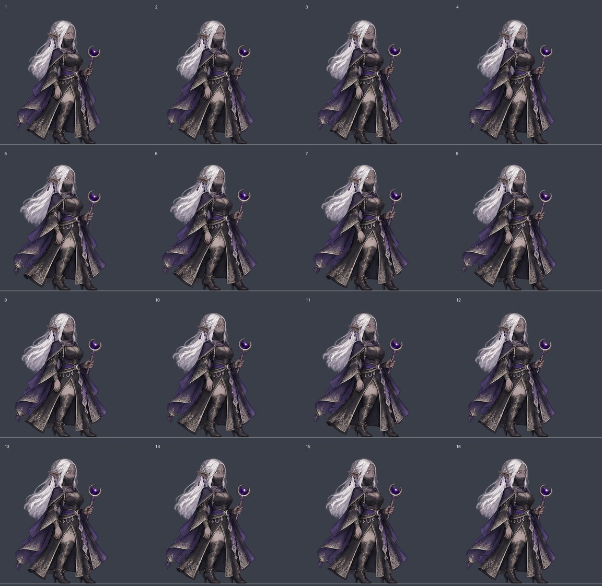

ADVENTURER: EXPEDITIONS · ART PREVIEWA calmer, more confident Layla
A relaxed stance, a slight head tilt and gentle movement in her hair and robes. Compare the new loop with her current in-game idle.
Current idle
1.6-second loop
New idle demo
4.8-second loop
View all 16 new drawings

The preview plays the drawings forward and back to avoid a jump at the loop seam. It uses painted frames with fixed scale, not a body rig or blended images. Generation record · Animation record